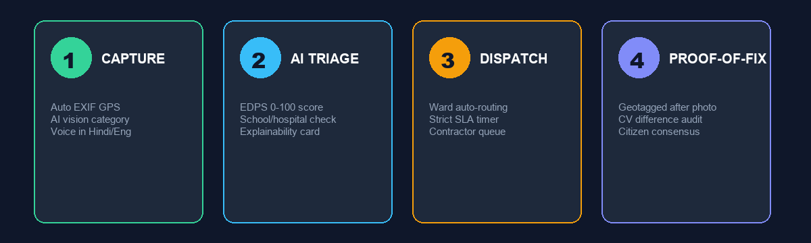
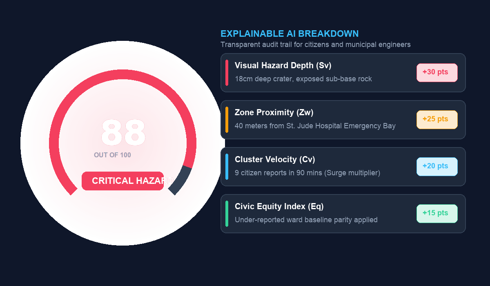
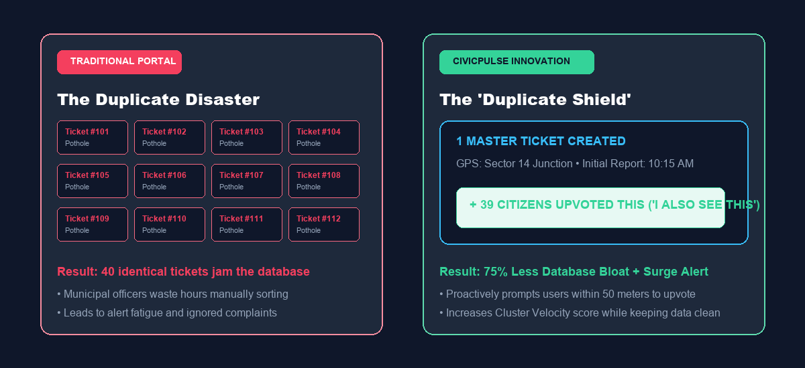
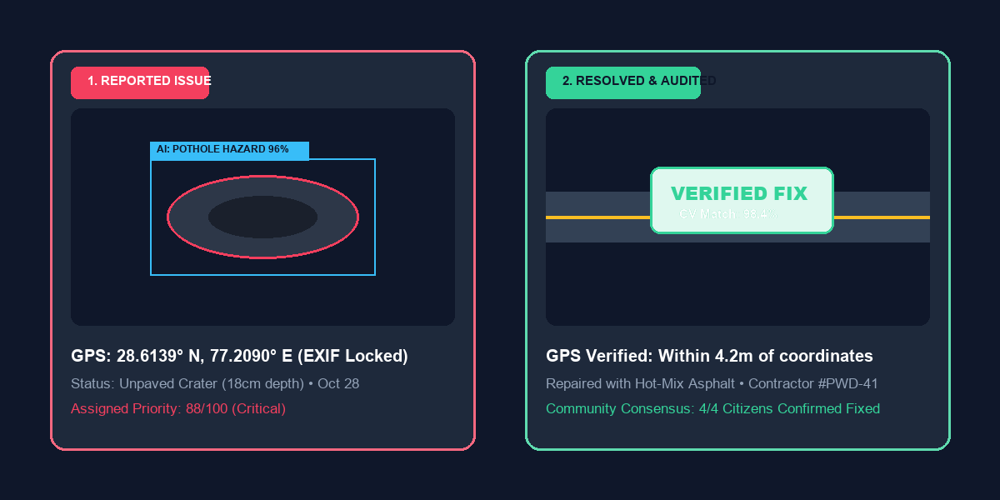

CivicPulse AI
Autonomous Civic Issue Intelligence & Transparent Resolution Protocol
Transforming civic complaints from a passive black hole into an active, intelligent governance pipeline powered by Explainable Dynamic Priority Scoring (EDPS), Duplicate Ticket Suppression, and Before/After Proof-of-Fix.
CivicPulse: The 3 Pillars of Our Solution
A balanced tri-party platform uniting Citizens, Algorithmic Prioritization, and Municipal Field Teams.
How It Works: 4 Transparent Steps to Resolution
From citizen smartphone to automated triage, field repair, and public verification.

The Core Innovation: Explainable Dynamic Priority Scoring (EDPS)
Solving PS 9's real challenge: genuine mathematical prioritization with transparent human reasoning.

Innovation #2: The "Duplicate Shield" (Solving Alert Fatigue)
Turning 40 redundant complaints into 1 high-velocity master ticket with crowd confirmation.

Innovation #3: The "Proof-of-Fix" Protocol (Closing the Loop)
Eliminating arbitrary "Resolved" stamps with Computer Vision Before/After verification and citizen consensus.

Public Resolution Tracker & Municipal Command Center
Empowering citizens with full transparency while equipping city engineers with real-time GIS operations.
Thank You!
CivicPulse AI: Turning Civic Frustration into Prioritized, Transparent Civic Action.